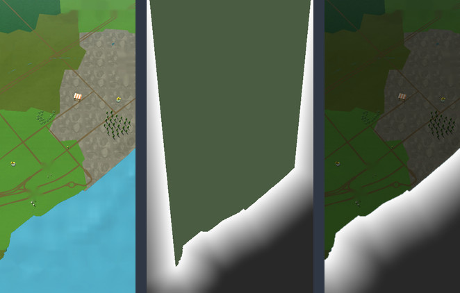

Water: depth that falls off, and fish in small groups
This study explores water with the illusion of depth falloff, particularly for larger bodies of water, and, for eye candy, shadow shapes (silhouettes) of schools of fish moving in it: not lots of fish in a school, but three or four in a group, with a few groups here and there. Here are three looks for the depth, moving, on the game's real map, with the fish in all of them.
Map water has no real depth, so distance from the shore stands in for it: shallow and pale at the edge, deep and dark far out. A pond or a river never gets far enough from a shore to go dark, so only large water shows the falloff, which is the intent. The fully zoomed-in screenshot has no water in it, so this page uses the other two zooms.
Today, and three ways the depth could look
Zoom out to see the most water. The fish keep to open water and fade as they near the shallows; look just above the navigation buttons at the default zoom.
Today, with fishOne blue-green with a soft cloudy texture, the same at the shore as far out. The fish alone already make it feel alive.
LagoonA smooth run from pale turquoise at the shore to deep blue far out, light rippling over the bottom in the shallows, and two lines of foam that take turns along the shore like small waves arriving.
Build: a colour ramp read by shore distance; two copies of one caustic texture sliding across each other, shown only where it is shallow; foam from the same distance value and a sine.
Low: one texture read and a ramp per pixel
Chart bandsThe same depth cut into four flat steps, like the depth tints of a sea chart or layers of poured resin. It sits closest to a flat, faceted world and to the atlas interface of round two's Relief.
Build: the same ramp with hard steps; a thin pale line on the shore; hardly any ripple.
Lowest
Deep glassDarker and glossier: deep water goes to navy, distant water picks up the pale colour of the sky, and the sun, or at night the moon, glints on small waves in open water.
Build: the ramp, a sky tint that grows with viewing distance, and a sparkle layer: a noise texture raised to a high power and lit from the sun's direction, so the glints follow the time of day.
Low to medium: a few more texture reads
How the depth is found when the map has none

Water, distance from the shore, depthLeft: the water in the zoomed-out screenshot. Middle: the same ground laid flat and seen from straight above, with every point of water shaded by how far it is from the nearest shore, up to 120 units (about 185 metres). Right: that distance put back under the game's camera. Because it is measured on the ground and not on the screen, the bands narrow with distance the way real ones would.
In the game the same thing can be had three ways, from cheapest to build to most exact. When the water surface is generated from the map data, each vertex can store its distance to the polygon's edge, and the shader reads it; large water needs vertices in its middle for that. Or a small top-down picture of land and water around the player is drawn once whenever the map moves, blurred, and read by the water shader from world position. Or a true distance field is computed from that picture with a jump-flood pass. None of it is per-frame work.
The fish
Three or four, a few groupsThree groups are in view at the default zoom and five when zoomed out, each of three or four fish. One leads along a slow looping beat; the others follow a moment behind and a little to the side, so the group bends through turns instead of moving as a block.
Shadows, not fishEach is one dark, soft shape with a tail that sways: no colour, no detail, drawn at about a third strength. They are half the size they first were: what they were when fully zoomed out is now their size at the default zoom, and zoomed out they are tiny and still read. They fade out where the water turns shallow, so they never cross onto land and never need to know where the shore is beyond that one value.
Cheap to buildA dozen flat shapes. One script moves them along looping paths; a sway in the vertex shader bends the tail; they are blended darker over the water. No fish model, no animation clips, no physics. The same shore distance that colours the water tells a group where it may swim.
At nightThe shadows nearly disappear against dark water, which is true to life. If you want night water to have something of its own, glints under the moon do more than fish.
A fishing spot: a world resource in the water
The next question was how the fish effect could be confined to a specified area. A fishing spot would be a world resource, so a worker is what would be assigned to it; as with the game's resource groups, tapping one outlines it and shows a popup to assign workers, so the area is simply a circle around the designated spot. Here is that spot, about 70 metres across in open water, on the Lagoon look. The passing groups keep clear of it, so what swims there belongs to it. One fish is sent on a wider round on purpose, so you can watch it fade at the edge and come back.
A school that circlesSix fish mill round one middle, all the same way, instead of passing through. That difference in movement is what tells a resource from the eye candy. Now and then a ring opens where one breaks the surface.
Build: the school is a thing with a middle and a radius. Each fish's place comes from the time alone, as an angle that advances and a distance from the middle that breathes, so it cannot leave and nothing has to steer it back.
Costs almost nothing
A shoal patchThe same school over a paler, livelier patch of water, so the place is marked even at a moment when no fish is in sight, and from further away.
Build: a soft disc added to the water's colour and a stronger ripple inside it; in the water shader, or one transparent quad on the surface.
Low
Tapped, with a worker sentTapping it outlines it the way the game outlines a woodland today, with the same thin gold line, here simply a circle, and would open the same sheet to hire a worker. The worker's pin then stands over the spot. The sheet is left out of this picture only because it would cover the spot.
Build: nothing new: the selection line the game already draws, given a circle's points instead of a group's outline.
Costs nothing new
Keep them in by where they liveGive the school a middle and a radius and work out every fish in those terms. A fish that is always between a third and two thirds of the radius from the middle cannot stray. The passing groups on this page are the same thing with a large radius and a middle that wanders.
And fence the drawingMultiply whatever the spot draws by a soft disc: solid to about 70 % of the radius, gone at the edge. Two lines in the fish material, fed the spot's middle and radius. Nothing can show outside, whatever the movement does, and the edge is soft instead of cut. It multiplies with the shore value, so a spot that reaches into the shallows still never puts a fish on land.
Where a spot may sitThe value that colours the water answers this too. A spot of a given radius fits where the distance to the shore at its middle is at least that radius plus a margin, so it lies wholly in open water, and a river or a pond gets a small spot or none.
Or with no code at allA particle system shaped as a circle on the water, with orbital velocity and a little inward pull, fish as flat meshes turned to their direction, and a fade in and out over each life. Quick to try and close enough; the fish do not school, since each goes its own way.
A water critter shows itself, briefly
For traps, the idea is the same fish effect with the shape of a water critter that has a distinct silhouette from the fish, marking a location with a higher chance of catching a water critter if a trap is set there. Unlike the fish, which are always visible, the water critter randomly and briefly appears, just enough so a player who watches for it can see it is there. Watch the open water just above the navigation buttons. The fish keep passing; the critter comes up at a moment and a place that change every time, glides a short way and dives, and the ring where it went under outlasts it by a moment. Switch the time to night and it glows instead.
A turtleA round shell, a head and four flippers. Nothing like a fish even at a glance, and still itself at the small size of the far zoom.
A rayA kite with a whip of a tail, its wing tips rippling as it goes.
An eelOne long line that swims in bends. The thinnest of the three, so the easiest to miss.
Brief, but fairIt is in view for just under three seconds: up, a short glide, down. The ring where it dived lasts about a second and a half longer, so a player who looks a moment late still gets a clue that something was there.
It should be the critter's own outlineThese three are stand-ins. The shape could be each water creature's real outline seen from above, made from its own mesh, so a player learns which creature keeps to which water before ever catching one.
The same middle and radiusThe place is again a middle and a radius in open water. The critter shows inside it, and a trap set inside it gets the better chance. The game already lets a trap go on water.
Cheap to buildOne flat shape, faded in, moved a short way, shrunk as it dives; one ring; a timer with a random wait. It costs nothing while it is not showing.
At night: something that glows
At night, instead of fish shadows, the effect could change to something with bioluminescence: still fish, or other water critters that swarm or school with a glowing effect. Three answers, playing in the same fishing spot. These three phones stay at night whatever the switch above says. In all of them the sea itself glows where small waves break on the shore.
Glowing fishThe same fish on the same paths, but each one is a streak of light, and the water it has just swum through sparkles behind it and fades. Lantern fish and flashlight fish do this for real. The passing groups glow too, a little greener, so the spot is still told apart by its circling.
Build: the fish material swaps a dark blend for an additive one at night; the wake is a short trail of sparkle particles emitted from each fish, a few a second.
Low: the same fish, plus about ten sparkles each
A smack of jellyfishEleven pale discs drifting slowly round the spot, each squeezing and relaxing to its own beat, brightening as it squeezes, with the four-leaf mark of a moon jelly. Slow where the fish are quick: it reads as a different creature from across the screen. A few are violet.
Build: one quad each with a ring texture, its scale and brightness driven by a squeeze curve; no tentacles needed from above.
Costs almost nothing
Sea firefliesDozens of tiny lights that rest, dart a little way with a flash, and leave a puff of light where they were. Real ones are called sea fireflies, and firefly squid gather the same way. They would be the water's answer to fireflies over the meadow.
Build: one particle system shaped as the spot's circle, with bursts of speed from the noise module and a sub-emitter for the puff. This is the one that needs no script at all.
Low: about fifty small particles
More that could school and glowComb jellies, which carry rows of shimmering rainbow light along their sides. Clouds of glowing krill or shrimp, as a soft patch that brightens where anything moves through it. And one large, rare visitor, a ray or an eel, never drawn itself: only the glow it stirs up as it glides through.
The sea itselfGlowing plankton lights up wherever water is disturbed. That gives glow to things the game already has: the line where waves meet the shore, as here, and a ring of light each time a trap's float bobs.
It could be what you catchWhat glows in a spot at night could be the fish critter that is only caught at night. The creature definitions already have a time window for encounters, which no starter creature uses yet. The glow is then a reason to open the map after dark.
Inland waterIn nature this is a thing of the sea. A river or a pond would more truthfully get fireflies above it and their reflections on it. The game's creatures are invented, though, so a pond can glow if that is wanted.